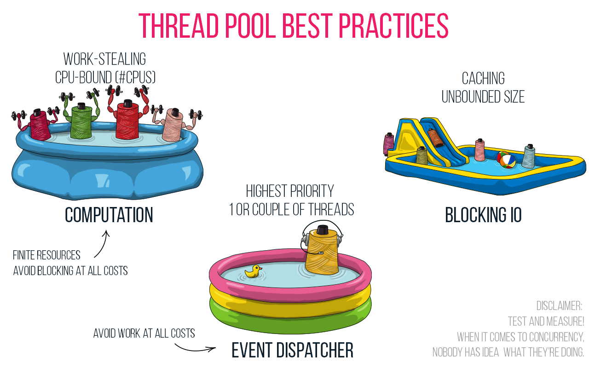

class: center, middle # Intro to Cats-Effect Gavin Bisesi • `@Daenyth` @47Degrees ??? Questions at the end --- # What is a "Functional side effect" library? -- Programming with "pure functions", aka programming with *Referential Transparency* --- # Referential Transparency -- A property of *expressions* (not statements (`return`) or declarations (`def`, `class`)) -- > The result of any expression can be replaced by its definition without changing the meaning --- # Referential Transparency > The result of any expression can be replaced by its definition without changing the meaning ```scala val two = 1 + 1 // two: Int = 2 two // res0: Int = 2 1 + 1 // res1: Int = 2 ``` 👍 --- # Referential Transparency > The result of any expression can be replaced by its definition without changing the meaning ```scala val hello = println("hello") // hello hello println("hello") // hello ``` 👎 --- # Who cares? Why use FP? Why program with Referential Transparency? RT means we can: - Read code and know what it means and what it does, without reading the rest of the codebase - Change existing code without breaking it --- # Who cares? Why use FP? In other words: We use FP because we want a codebase that - Developers can read and understand - Can be changed without breaking things (among other reasons) --- # Functional Programming - Combinators *Combinators* are composable building block functions that modify some input in a reusable way - `map` - `filter` --- # Some setup ```scala import cats._ import cats.syntax.all._ import cats.effect._ import cats.effect.implicits._ import scala.concurrent._ import scala.concurrent.duration._ import ExecutionContext.Implicits.{global => futureEC} import cats.effect.unsafe.implicits.{global => ioRuntime} // Custom `unsafeRunSync` for mdoc reasons import daenyth.talk.ce.MdocConsoleWorkaround._ def yolo[A](description: IO[A]) = description.unsafeRunSyncWithRedirect() ``` --- # cats-effect `IO` A lot like scala `Future` at first glance - `apply` to wrap blocks of code - `map`, `flatMap` - Don't use `Await` with `Future`; don't use `unsafeRun*` with `IO` ```scala val rndUUID: IO[UUID] = IO(UUID.randomUUID()) // rndUUID: IO[UUID] = Delay( // <function0>, // cats.effect.tracing.TracingEvent$StackTrace // ) val helloIO = rndUUID.flatMap(uuid => IO(println(s"Hello $uuid"))) // helloIO: IO[Unit] = FlatMap( // Delay(<function0>, cats.effect.tracing.TracingEvent$StackTrace), // <function1>, // cats.effect.tracing.TracingEvent$StackTrace // ) yolo(helloIO >> helloIO) // Hello a1fb5ebf-11dc-410b-8258-4872e36cf32e // Hello fa27fb78-11a5-4a21-acff-f0c3028cbea8 ``` --- # `IO[A]` values `IO[A]` describes a computation that will: - Eventually produce a value of `A`, or - Fail with a `Throwable`, or - Never complete ```scala def game = for { _ <- IO.println("Guess a number") n <- IO.readLine _ <- if (n == 10) IO.println("Yay!") else IO.raiseError(new Exception("wrong")) } yield () def clock: IO[Unit] = IO.sleep(1.minute) >> Clock[IO].realTimeInstant.flatMap(IO.println) >> clock ``` --- # Fibers `IO` is based on the `Fiber` abstraction for low-level concurrency ```scala // Simplified trait IO[A] { def start: Fiber[A] } trait Fiber[A] { def cancel: F[Unit] def join: F[Outcome[F, Throwable, A]] } ``` A low level building block - you usually don't need to interact with them directly --- # `IO` Execution - Can describe both concurrency and parallelism - Uses N:M green-threading - Cheap: thousands of concurrent `Fiber`s are not a problem - Nonblocking asynchronous execution - Run as as few as 1 thread (including Scala.JS) --- # `IO` Concurrency Both low-level `Fibers` and high-level combinators - Forking: `io.start`, `Fiber` - Cancellation (low level): `Fiber#cancel` - Cancellation (high level): - `IO.race(first, second)` - concurrently execute, return the winner and cancel the loser, - `io.timeout(duration)` - fails with `TimeoutException` if not complete within `duration` - `io.timeoutTo(duration, fallbackIO)` - Execute `fallbackIO` if `io` is not complete within `duration` - Nonblocking asynchronous sleep: `IO.sleep(duration)` - Concurrent execution: `start`, `listOfIO.parSequence`, `(ioA, ioB).parTupled` --- # Resource management `Resource[IO, A]` describes the ability to initialize and release a resource - Similar to `try`/`finally`, but composable and referentially transparent - `catch`/`finally` aren't transparent - they don't talk about *return values*. - Allows tracking resource lifetime at the type level - Function accepting `Resource[IO, A]` parameter will acquire and release internally - Function accepting `A` reuses the live value - Allows *guaranteed* finalization - Whether the function given to `use` completes, fails, or is cancelled, the Resource is closed. Will not leak. --- # cats-effect typeclasses All the capabilities that `IO` exposes are described by typeclasses, allowing more generic code and multi-library compatibility. This talk focus on `IO` and not the typeclasses --- # cats-effect typeclasses <img src="typeclasses-cheat-sheet.jpeg"> --- # `IO` vs `Future` - Overview Actions: - `IO` is a value that describes an action (possibly asynchronous) - `Future` is a handle to the result of an already-running action (possibly asynchronous) --- # `IO` vs `Future` - Speed - `IO` is optimized for throughput - Thread shift on demand - Has utilities for introducing manual shifts for fairness - Benchmarks faster for most workloads - Work-stealing runtime implementation inspired by Rust's Tokio - `Future` is optimized for fairness - Thread shift every single `map`/`flatMap` (hence implicit `ec`) - Can only be configured using a specialized `ec` argument --- # `IO` vs `Future` - Cancellation - `Future[A]` can't be cancelled - once constructed, it can't be stopped - Wasted resources - `IO[A]` can be concurrently forked, and then either `join`ed or `cancel`ed - There are high-level constructs around this in cats-effect - More sophisticated abstractions built on top can be found in other libraries --- # `IO` vs `Future` - Concurrency - Future has concurrency depending where you invoke functions - IO has structured concurrency via explicit combinators --- # `IO` vs `Future` - Concurrency with Future ```scala // Sequential execution def jobOne: Future[Int] = Future(???) def jobTwo: Future[String] = Future(???) jobOne.flatMap(i => jobTwo.map(s => (i, s))) ``` ```scala // Concurrent execution val jobOne: Future[Int] = Future(???) val jobTwo: Future[String] = Future(???) jobOne.flatMap(i => jobTwo.map(s => (i, s))) ``` --- # `IO` vs `Future` - Concurrency with Future Does this expression evaluate concurrently or sequentially? ```scala jobOne.flatMap(i => jobTwo.map(s => (i, s))) ``` Impossible to tell - have to read the implementation details --- # `IO` vs `Future` - Concurrency with `IO` ```scala val jobOne: IO[Int] = IO(???) val jobTwo: IO[String] = IO(???) // Sequential execution jobOne.flatMap(i => jobTwo.map(s => (i, s))) // Also Sequential val result1: IO[(Int, String)] = (jobOne, jobTwo).tupled // Concurrent execution (manually) for { j1Fiber <- jobOne.start j2Fiber <- jobTwo.start i <- j1Fiber.join s <- j2Fiber.join } yield (i, s) // Concurrent execution (higher level) val result2: IO[(Int, String)] = (jobOne, jobTwo).parTupled ``` --- # A tour of cats-effect - Utilities around Thread pools, controlling where and when things execute - Temporal, Clock - Concurrency primitives - Semaphore - Has `N` permits, can acquire or release permits as needed. Acquire blocks until permits are available - Ref - Lock-free concurrency-safe mutable shared memory. A pure replacement for `var` - Deferred - A pure promise. Can complete with a value or get the completed value. Get blocks until complete. - And more! --- # A tour of cats-effect - Dispatcher - Allows you to have controlled regions of `unsafeRun*` methods, for wrapping imperative libraries - `IOApp` - Whole "pure" applications - Handles all the initialization, cancellation hooks, jvm actions so you can write your main method in `IO` - IORuntime - An optimized work-stealing compute-based Execution context, bundled with an appropriate pool for thread-blocking work and a high-priority scheduler pool. --- # Thread pool management  --- # Thread pool management - `ExecutionContext.global` `global` isn't an ideal choice. - Designed for mixed cpu + blocking-io work in a single pool - Optimal for neither - CPU-bound work suffers in performance from cpu context shifting; `global` creates more threads than cpu cores - I/O-bound work can preempt cpu-bound work if `global` decides not to make a new Thread - This applies for all fork-join pools - even if you don't use cats-effect. --- # Thread pool management - 3 Pool Model - Computation: Fixed size pool for cpu work - Normal `IO` values run here - Blocking IO: Cached thread pool for thread-blocking work - Wrap side-effecting code with `IO.blocking` or `IO.interruptible` (if you can `Thread.interrupt()` it) - Event Dispatcher: High-priority pool for scheduling and timers - Used to schedule asynchronous `sleep` calls --- # Blocking threads Blocking threads should be avoided - Your cpu core is doing no work, waiting for a result while it could be computing something else - It reduces your bandwidth for concurrent work Instead of `IO.apply`, use: - `IO.blocking` to wrap thread-blocking code - `IO.interruptible` if that code will behave well under `Thread.interrupt()` --- # Blocking threads - `IO.blocking` - `IO.blocking` to wrap thread-blocking code ```scala def fos: java.io.FileOutputStream = ??? def bytes: Array[Byte] = ??? val writeFile: IO[Unit] = IO.blocking(fos.write(bytes)) ``` --- # Blocking Threads - `IO.interruptible` - `IO.interruptible` if that code will behave well under `Thread.interrupt()` ```scala val tenMinutes = 10 * 60 * 1000 // tenMinutes: Int = 600000 def blockingTask = IO.interruptible(many = false)(Thread.sleep(tenMinutes)) def printTime = Clock[IO].realTimeInstant.flatMap(t => IO.println(s"It is now $t")) yolo(for { _ <- printTime task <- blockingTask.start _ <- IO.sleep(2.seconds) _ <- task.cancel _ <- printTime } yield ()) // It is now 2021-08-02T15:18:30.698Z // It is now 2021-08-02T15:18:32.714Z ``` --- # Time `Temporal` and `Clock` - Nonblocking async sleep: `IO.sleep(duration)` (or `Temporal[IO].sleep(duration)`) - Get the time: `Clock[IO].realTime`, `.realTimeInstant` ```scala // Time since epoch yolo(Clock[IO].realTime) // res12: FiniteDuration = 1627917512718 milliseconds // Current Instant yolo(Clock[IO].realTimeInstant) // res13: java.time.Instant = 2021-08-02T15:18:32.720Z // Monotonically incrementing clock yolo(Clock[IO].monotonic) // res14: FiniteDuration = 288656489830275 nanoseconds ``` --- # Applications `IOApp` for your "main" classes ```scala object MyMain extends IOApp { def run(args: List[String]): IO[ExitCode] = { val myAppResource = for { _ <- Resource.eval(IO.println("hello cats")) db <- getDatabase result <- Resource.eval(myAppLogic(db)) _ <- Resource.eval(IO.println(s"got $result")) } yield () myAppResource.useForever.as(ExitCode.Success) } def getDatabase: Resource[IO, Database] = ??? def myAppLogic(db: Database): IO[Int] = ??? } ``` --- # But I already have an application! `IO` can be introduced to a codebase using `Future` or using its own "main" class. --- # Calling `Future` from `IO` Tip: Instantiating a `Future` value is a side effect, so it gets wrapped with `IO.apply` ```scala def existingLogic(x: Int): Future[Int] = ??? def moreLogic(y: Int): IO[Int] = for { xResult <- IO.fromFuture(IO(existingLogic(42))) } yield xResult + y ``` --- # Calling `IO` from `Future` ```scala import cats.effect.unsafe trait MyTrait { def doWork: Future[Int] } // NB: You can use `IORuntime.global`, but it's more flexible to take a parameter class MyTraitImpl(implicit ioRuntime: unsafe.IORuntime) extends MyTrait { override def doWork: Future[Int] = ioLogic.map(_.length).unsafeToFuture() def ioLogic: IO[String] = ??? } ``` --- # Converting to IO - Sequential imperative Sequential code: - Replace `;` with `flatMap` ```scala // Imperative def oneStep(): Unit = println("one") def anotherStep(): Unit = println("two") oneStep() anotherStep() // IO def oneStepIO(): IO[Unit] = IO(println("one")) def anotherStepIO(): IO[Unit] = IO(println("two")) for { _ <- oneStepIO() _ <- anotherStepIO() } yield () ``` --- # Converting to `IO` - `Future` code - `Future.apply` -> `IO.apply` - `Future.successful` -> `IO.pure` - `Future.failed` -> `IO.raiseError` - Implicit `Future` concurrency -> Explicit concurrency combinators - Side effects in `map` -> explicit effects with `IO(sideEffect())` in `flatMap` --- # Converting to `IO` - imperative code and mutation - `new` on a stateful class is stateful; wrap it in `IO` - Reading or writing to stateful classes is stateful; wrap it in `IO` - Imperative setup/close methods -> `Resource.make` - Use `Random[IO]` for pure, performant, concurrecy-safe randomness. Avoid `IO(Random.xyz())` - Use `Clock[IO]` for pure access to time. - Two sequential imperative lines -> two `IO` expressions combined with `flatMap` - "I need a `Foo` value but I have `IO[Foo]`, how do I get it out? - You never "get it out"; use `flatMap`; `getFooIO.flatMap(foo => useFooIO(foo))` --- IO Examples ```scala import cats.effect.std.Random val ioExample = for { _ <- IO.println("Hello cats!") // Uses the `Console[IO]` capability time <- Clock[IO].realTimeInstant _ <- IO.println(s"It is now $time") rnd <- Random.scalaUtilRandom[IO] _ <- rnd.nextInt.flatMap(n => IO.println(s"Your lucky number is: $n")) } yield () ``` ```scala yolo(ioExample) // Hello cats! // It is now 2021-08-02T15:18:32.737Z // Your lucky number is: -514751454 ``` --- # Converting to `IO` - general tips - Sometimes you'll want to `import cats.syntax.all._` for generic combinators (eg `tupled`, `handleError`) - Sometimes you'll want `import cats.effect.implicits._` for effect methods (eg `parSequence`, `parTupled`, `parMapN`) - To imperative run an `IO`, you need either an `IORuntime` or create a `Dispatcher[IO]`. - `IORuntime.global` is fine for production! It's not like `ExecutionContext.global` - `Dispatcher[F]` is cheap and works with "capability trait" style (aka "tagless final") - Understand the risks when using `.unsafe*` methods on `IO` --- # Converting to `IO` - Common errors - Discarding an `IO` without flatMap-ing it - Side effects not wrapped `IO`, eg in `map` - Implicit `Future` concurrency - Use `-Ywarn-value-discard`! - Optionally but recommended, set a lot of "save me from myself" flags at once using `sbt-tpolecat` --- # Common Errors - discarding your `IO` ```scala def doStuff: IO[Unit] = ??? def oops = { // This IO never executes! IO.println("About to do stuff") doStuff } def correct = IO.println("About to do stuff") .flatMap(_ => doStuff) ``` Tip: `fa.flatMap(_ => fb)` is so common it has an operator; `fa >> fb` --- # Converting to `IO` - Application structure - Semantic interfaces, not mechanical ones - New code in `IO` - Interop where needed - Convert one class at a time - You don't need to convert the whole project! - Stop whenever you reach "good enough" - Update code sections when you need to; if it's not broken and isn't being modified, leave it --- # Cats-Effect - Write code that doesn't break when you change it - Write reusable code that you know won't surprise you - Write code that can be understood in isolation - Gain access to an ecosystem of compatible, efficient, and easy to learn libraries --- # Links and resources - [Cats-Effect Concepts](https://typelevel.org/cats-effect/docs/concepts) - Typelevel [Discord chat](https://discord.gg/fChyzB4w) - [Documentation](https://typelevel.org/cats-effect/) - [Functional and Reactive Domain Modeling](https://www.manning.com/books/functional-and-reactive-domain-modeling) - Book that goes into application design, in a style that meshes very cleanly with cats-effect - [Referential Transparency in the Wild](https://impurepics.com/posts/2018-07-13-referential-transparency-wild.html) - [Shared State in Functional Programming](https://typelevel.org/blog/2018/06/07/shared-state-in-fp.html) - More examples around `Resource` usage and simpler data sharing examples - [@impurepics](https://impurepics.com) is the author+owner of the graphics --- class: center, middle # Thanks! Code and slides at `daenyth/intro-cats-effect` on GitHub ## Questions?